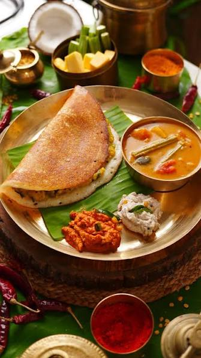

Masala Dosa with Sambhar

Description of this dish:
A masala dosa is a famous South Indian dish. It has a thin, crisp, golden rice crepe. Inside, it holds a warm, spiced potato and onion mix. It comes with hot, tangy lentil stew (sambar) and fresh coconut chutney.
Ingredients:
- Dosa batter: 3 cups (fermented mix of rice and urad dal)
- Potatoes: 3 large (boiled and peeled)
- Onions: 2 medium (sliced thin)
- Green chilies: 2 (slit or chopped)
- Ginger: 1 teaspoon (grated)
- Mustard seeds & Cumin seeds: ½ teaspoon each
- Chana dal & Urad dal: 1 teaspoon each
- Curry leaves & Turmeric powder: A few leaves, ¼ teaspoon
- Oil or Ghee: As needed for cooking
- Toor dal (Yellow lentils): ½ cup (washed)
- Mixed vegetables: 1 cup (carrots, beans and pumpkin)
- Tomatoes: 1 medium (chopped)
- Tamarind extract: ¼ cup
- Sambar powder: 2 tablespoons
- Mustard seeds, dried red chili, and curry leaves: For tempering
- Asafoetida (Hing) & Turmeric: A pinch of each
Steps to prepare this dish:
- Boil the lentils: Pressure cook the toor dal with 1.5 cups of water and a pinch of turmeric until soft and mushy. Mash well.
- Cook vegetables: Boil your diced vegetables in a separate pot with water and salt until tender.
- Add flavor bases: Mix the cooked vegetables, chopped tomatoes, and tamarind extract into the mashed dal. Add sambar powder and salt.
- Simmer and temper: Boil the mixture for 10 minutes. Heat oil in a small pan, pop the mustard seeds, add curry leaves and red chili, then pour this tempering into the sambar.
- Temper spices: Heat 1 tablespoon of oil in a pan. Add mustard seeds, cumin, chana dal, and urad dal. Let them turn golden.
- Sauté aromatics: Add grated ginger, green chilies, curry leaves, and sliced onions. Cook until onions are soft.
- Add potatoes: Add turmeric powder, salt, and crumbled boiled potatoes. Pour 2 tablespoons of water.
- Mix well: Stir and mash lightly for 2 minutes. Garnish with coriander leaves and set aside.
- Heat the pan: Heat a flat cast-iron griddle (tawa) on medium heat and wipe it with a little oil.
- Pour batter: Pour a ladleful of batter in the center. Spread it in wide circles outward to make a thin layer.
- Crisp the dosa: Drizzle oil or ghee around the edges. Cook until the bottom turns golden and crisp.
- Add filling: Place a portion of the potato masala in the middle. Fold the dosa over the filling and serve hot with the warm sambar
Back to all recipes page